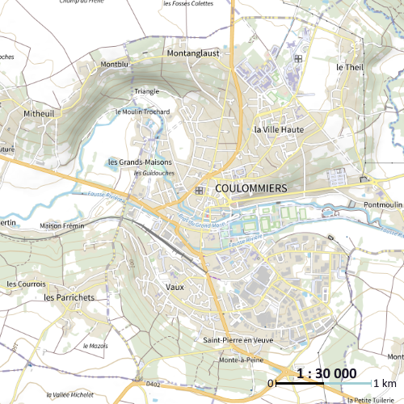
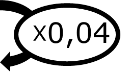

|
Chapitre 17
|
- Proportionnalité, échelles et pourcentage
|
Activité Introduction
Louis a pris des vacances en suisse autour du lac Léman.
-
En utilisant l'échelle de la carte, vérifier que la distance à vol d'oiseau entre Genève et Lausanne est d'environ 50 km.
-
Déterminer la distance à vol d'oiseau entre Lausanne et Thonon-les-bains ?

Echelles :
Sur un plan dit « à l'échelle », les longueurs sont proportionnelles aux longueurs réelles.
Le coefficient de proportionnalité obtenu en divisant les longueurs sur la carte par les longueurs réelles, toutes exprimées dans la même unité, s'appelle l'échelle du plan.
Echelle = $\frac{Taille\ plan}{Taille\ réel}$
Exemple :
Sur le plan de coulommiers ci-contre, l'échelle est indiqué en bas à droite.
$\frac{1}{30\ 000}$
Cela signifie que 1 cm sur le plan correspond à 30 000 cm dans la réalité soit 300m.

Pourcentage :
Un pourcentage est une proportion par rapport à 100. $\textcolor{#e53935}{t} \% = \frac{ \textcolor{#e53935}{t} }{100}$
Exemple :
L'eau de la Mer Noir contient 2% de sel. Cela signifie que :
- La proportion de sel dans l'eau est de $\frac{4}{100}$.
- 100kg d'eau contient 4kg de sel.
- La masse d'eau et de sel sont proportionnel avec un coefficient de proportionnalité de $4\%=\frac{4}{100}= 0,04$
| Masse d'eau (kg) |
100 |
360 |
| Masse de sel (kg) |
4 |
? |

Pour calculer la quantité de sel dans 360kg, on multiplie : $360\times 4\% = 360 \times 0,04 = 14,4 kg$
Remarque :
- Le symbole % est un opérateur.